Removal of the headlight fairing
First remove the left and right-hand side panel covers (
Removing the panel
) and front half-fairing (
Removing the front half-fairing
).
Disconnect the Immobilizer antenna connector (1).
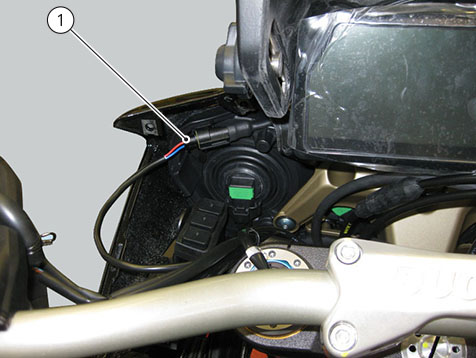
Loosen tank fairing screws (2).
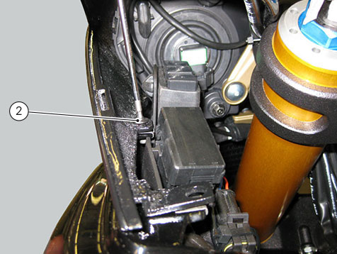
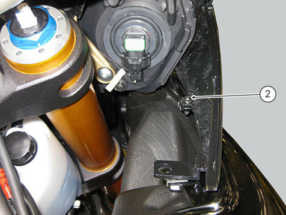
Loosen screws (3) on either side of headlight subframe.
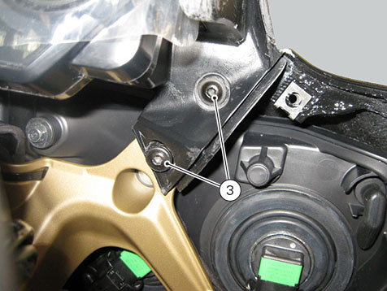
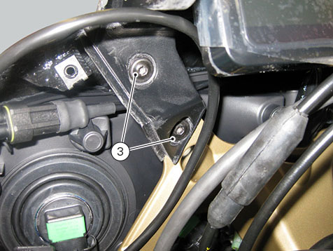
Slide headlight fairing (4) up by releasing it from rubber block (5) on headlight.
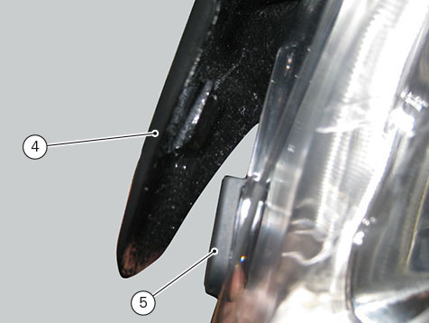
Disconnect instrument panel connector (6) and remove headlight fairing (4).
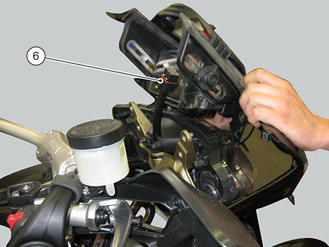
If windscreen (7) needs replacing, loosen screws (8), remove windscreen (7) and collect rubber blocks (9).
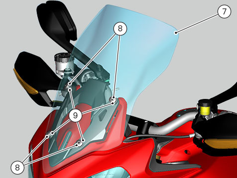
Disassembling the headlight fairing
Loosen three nuts (10) and remove instrument panel (11).
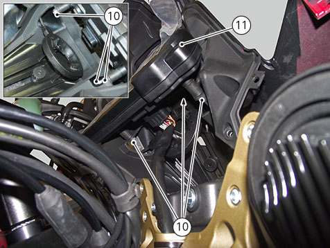
Loosen the two screws (12) and remove the antenna (13).
Loosen rail special screw (14) and collect relevant bush (15) and rubber block (16).
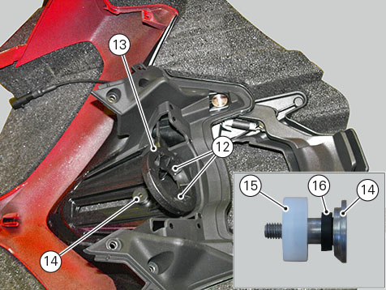
Loosen the retaining screws (17) on instrument panel support (18) and collect washers (19).
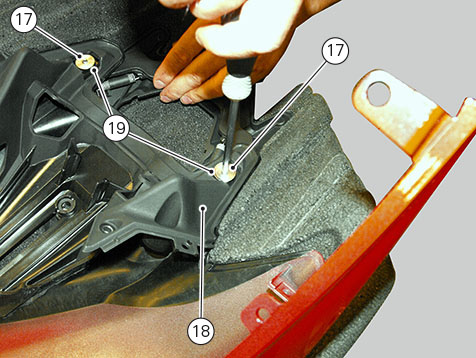
Release the two springs (20), slide out windscreen rail (21) from its fixed mount (22).
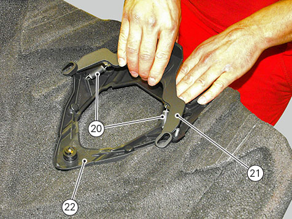